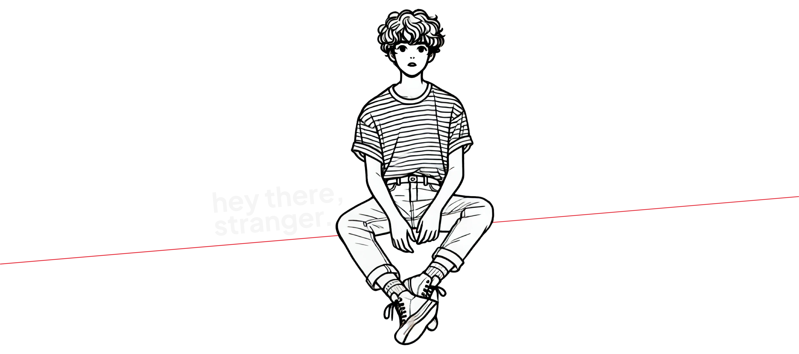

I CREATE
HUMAN-CENTERED
EXPERIENCES
DESIGN PRAXIS EST. 2010
As a Designer and User Interface (UI) Developer with 15 years of experience, specializing in Agile methodology, branding, and User Experience (UX) Design, I have a strong history of working with diverse technical teams to create scalable code and web/mobile solutions.
I am adept at managing stakeholder expectations throughout all phases of the project lifecycle, striving for excellence in every brand and UI development endeavor.
Currently working at BlueCloud.